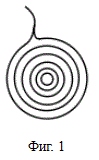
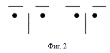
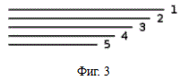
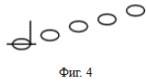
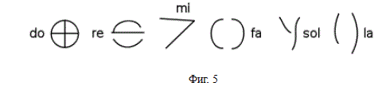

Отче наш.
Имате ли зададена тема? – /Имаме./ Прочете се темата: „Най-добрата храна за младите“.
Какво разбирате под думата „кисел и сладък“? За да пишете върху киселите и сладките храни, трябва да имате вътрешно схващане. Вие никога не можете да предадете една идея за сладост, както и да я описвате отвън, ако не я опитате. Значи ще опитате две състояния. Вие сега пишете за младостта, като че ли е нещо външно, някаква външна идея. Младостта е нещо вътрешно. Човек, който не е бил млад не знае какво нещо е младостта. Трябва да е бил млад. Старият, който не е бил стар не знае какво нещо е старостта. Ако биха ви задали въпроса, защо човек има 10 пръста на краката и 10 пръста на ръцете, ако ви дадат да държите един докторат, за да свършите, върху този въпрос, как ще обосновете? Не можеше ли да бъдат по 3–4, по 6–7. Сега природата някъде е много щедра. Тя е турила 250 хиляди косми на човешката глава. Защо да не тури 100, ами 250 хиляди? Каква цел е имала да тури 250 хиляди косми, или задавам друг въпрос. Човек има 7 милиона пори. Не можеше ли по-малко ами 7 милиона? Защо искате да пиете вода, защо искате да ядете хляб? Ако човек пие водата или ако се откаже да пие вода ще има различни последствия. Ако вместо вода пие вино какво става? Ако пие туй, което природата му е предназначила, наричаме го трезвеник. Ако вие почнете да мислите какво сте в същност, ако се спрете да мислите и си съставите едно ясно понятие какво нещо сте. Запример, ако имаш 1000 пори от детинство до стара възраст, до 120 години. Ако имахте 120 фотографии, коя щеше да бъде вярна, че сте вие? Как ще обясните верността на всичките тия фотографии?

Кои са причините за да се образува този плод (Фиг. 1)? Не че може да разрешите въпроса. Някои от плодовете са удължени, някои са валчести. Тези, удължените плодове действуват по един начин, валчестите – по друг. Вземете всеки един характер. Според образа на човека и характера е.

Според това какъв е образът, дали е удължен или е валчест, дали един образ е широк или е тесен, всичко това съответствува на човешкия характер. Не може да събереш един човек с валчест образ и един, който има продълговат. Те нямат еднакъв характер. (Фиг. 2). Какъв е първият характер, какъв е вторият? Очите в двата характера се отличават. Очите на първия са отдалечени, а вторите са приближени. Първите очи събират повече светлина, повече впечатления добиват. Те всичко виждат. Умът им е занят с външни образи и нямат време да разсъждават. Вторият човек, каквото е чел го знае, запомня го хубаво. Ако кажеш 10 думи добри, ще ги запомни. 10 лоши думи, ако кажеш, няма да ги забрави. Добрите думи може да ги забрави, може цяла плеяда хубави думи да му кажеш, тях едва ли ще запомни, а лошите ще запомни. Разбира се външните условия и вътрешните възможности се различават. Образът на нарисувания плод показва пътища. Когато човек минава през земята, кои планети са оказали влияние върху нея? Ако човек, когато се е раждал, земята е минавала по-близо до слънцето или ако когато се е раждал, някоя от другите планети е минавала по-близо, тя ще му окаже влияние. Може Венера да е била близо, когато се е раждал, може Месечината да е била по-близо, туй ще укаже известно влияние върху характера на човека. Научно астролозите откъде са намерили коя планета как влияе? Казват, че еди коя си планета влияе върху човека така. Те разглеждат въпроса чисто механически. Когато говорим за една планета, разбираме разумно общество, разумни слънчеви общества, разумни меркуриански общества, разумни венерини общества, разумни лунни общества, разумни марсиански общества, какво влияние са указали. Планетите, слънцето са жилища на тия същества.
МЛАД. Млад има три Л. Две Л са събрани в буквата М. Едното е женско Л, другото е мъжко, третото е неутрално. После имате буквата Д. То е затворено Л. Имате значи четири Л. Младият човек е бил свободен дух, щастлив горе в небето при баща си и майка си. Излязъл оттам и ходил в тинята. Като слязъл в тинята окалял се, като погледнал дрехите си, не може да се върне. Щом като се е окалял не може да се върне, оставили го да израстне, да се изчисти. Той като видял калта, казва: „Какво нещо е това?“ Помислил, че е нещо хубаво и казал: „Чакай да бръкна“. Нямал понятие какво нещо е калта. Като влязъл вътре подвижил се насам-натам, видяло му се интересно. Помислил, че нищо няма в тази кал. После видял, че доста пострадал от нея. Излязъл из калта навън. Сега на какво ще отдадете тия състояния мрак, тъмнота, недоволство, гняв, дето ви смущават. Ако условията и възможностите са хубави, няма да ги имате. Прекараш един бурен живот, вътрешните възможности и външните условия не са хармонични. Вие казвате: „Така Господ наредил. Така Господ е наредил да се молиш, да плачеш, да се радваш“. Религиозните хора така разсъждават. Учените хора разсъждават другояче. Казват, че причини са външните условия. Той е учен човек има добри условия. Той е силен човек, има добри условия. Умен е, казва то се дължи на баща му и на майка му. А религиозните хора казват: „Господ го е направил така“. Едните поддържат, че Господ направил хората така, а другите поддържат, че външните условия са го направили. Когато говорите за младия, можете ли да кажете коя е най-забележителната черта на младия? Кой е бил първия съвет, който е бил даден на младия, когато е слязъл тук? Те са му казали така: „Не слизай в света ще се окаляш.“ Той не знаел какво нещо е каляне. Казали му: „Не слизай, страдание ще имаш“. Казва: „Какво нещо е туй страдание? Какво нещо е окаляне? Няма никаква разлика между тази материя и онази материя.“ Казал е: „Тази материя е по-гъста, а тази, в която сега живеем е по-рядка. Щом ще сляза в този свят има различие“. Коя е отличителната черта на младия? Той без да иска става художник. Най-първо той е имал едно бяло платно. Седи не знае да рисува. Имал бои, не знае как да рисува, как да ги тури. Не знае за какво служи портокалената боя, жълтата, синята и т. н. Всеки цвят има свой вътрешен смисъл. Ти нарисуваш едно око и туриш сенки около, тъмно. Някои художници турят много дебели сенки, някои по-светли. Ония, тъжните хора, винаги имат сенки на очите си. Тъжните хора имат дебели сенки. Веселите хора имат светли сенки. На ония, сприхавите хора, носовете им са дълги и тънки. На онези разположените, са малко по-къси, дебели и широки. Казва: „Той има широк нос.“ Широкият нос показва разположение, тънкият нос показва сприхавост. Колкото носът е по-тънък, човек е по-сприхав. Ще кажеш: „Безразлично е“. Но то е факт. Човек, който има широк нос е работил. Този, който има тънък нос, не е работил на физическия свят, идеализирал е. Хора с широки носове са работили повече, затова носът е станал широк. През широките носове е минал повече въздух, отколкото през тесните. Тия твърдения трябва да ги обосновете научно. (Фиг. 3). Тия линии се различават по дължина. В първата линия, човек е извървял по-голямо разстояние. Линиите надолу се скъсяват. Този, който е извървял по-дълъг път какво е придобил? Ако първия пръст е бил по-дълъг от средния пръст, такъв човек каквото намисли ще го направи. И 100 години да минат той ще го направи.

Една майка турила захар в една кратуна. Детето отивало и изваждало захарта от кратуната. Майката била благоразумна. Не казва: „Кой изважда захарта?“, вижда, че захарта изчезва от кратуната. Един ден туря раци в кратуната, детето бръква, туря си ръката в кратуната и един от раците го хваща. Детето веднага тича при майка си и плаче. Тя разбрала кой взема захарта от кратуната. На детето не му иде на ума как го е хванал ракът, а тя разбрала кой е онзи, който бърка в кратуната. Сега една погрешка като направите, то е ракът, който ви е хванал за ръката. Не за пръв път правите погрешката. Не за пръв път бъркате, че ракът ви хванал за ръката. Много пъти сте бъркали, че да ви хване ракът. Някой път казвате, че ракът ви е хванал за ръката. Тогава погрешката става видима. Тогава погрешката е закон. Законът е ракът. Като бръкнеш в кратуната – хване те рака. Когато не те хваща още ракът, законите не са се образували. Сега казват, че в света има закони. Законът е опасна работа. Като погледна ушите на човека, виждам, че на някои ушите са дълги, големи и плътни. На някои носът е дълъг, лицето широко, челото широко. Онези, които не разбират съответствията, които съществуват вътре в природата казват: „Така са направени“. Пък за туй устройство са работили ред разумни същества. Човек е построен от много разумни същества. Почти цялата природа е взела участие в създаването на неговото тяло. Човек трябва да използува условията. Той не знае защо има 10 пръста. Първият пръст е за да бъде самостоятелен. Личност трябва да има. Личността създала първия пръст. Тази личност трябва да бъде справедлива – (вторият пръст). Третия пръст, безименния пръст, значи обхода трябва да има. Най-малкият пръст е да знае как да постъпва всеки ден. Какво показва палецът? Палецът е да ги обединява, да ги държи в хармония. Той е капелмайстор. Тогава имате във втората ръка един квартет с капелмайстор. Имате четирима оркестранти. Имате първа цигулка, имате чело, имате бас, имате алт. Палецът е диригентът. Интересно е, квартет имате, а не знаете да свирите и пеете. Във вас още пръстите не са проговорили. Забележете, онези сприхавите хора имат къси нокти и тесни са. Когато дължината на ноктите (се скъсява) е едно, а когато широчината се скъсява е друго. Ако дължината се скъсява човек е сприхав, не мисли, не е разсъдлив, рита като кон. Щом нещо не е наред скъсва и хвърля. Ако ноктите се удължават човек започва да мисли трябва ли да го къса или не. Та сега в живота си дълго време трябва да започнете да разсъждавате и в 2–3 години може да удължите ноктите. Една придобивка е да удължиш ноктите. С характера си можеш да изопачиш ноктите. Разни хора има. Всяко разумно усилие най-първо се отразява върху ноктите и болезнените състояния се отразяват върху тях. Има хора, които изучават болезнените състояния по ноктите. По-добре е да не знаете защото ще се изплашите. Та казвам: Усилията, които правите ще укажат влияние върху ноктите и върху другите части на тялото. Тия неща не са така произволно направени. Природата милиони, милиони опити е направила, докато е създала нещо разумно в човека. Всеки един живот се наслоява върху човешкото тяло. У веселия човек, веселието се наслоява. У тъжния човек, тъгата се наслоява в очите му. У честния човек, честността се наслоява в лицето му. У справедливия, справедливостта се наслоява. Ако изучавате човешкия характер тия неща ще ги разберете. Вие казвате: „Как се наслоява?“ Като изучаваш човека ще започнеш да виждаш там където досега не си виждал. Ако започнете да изучавате сенките на очите, ще знаете ония състояния, които той има. Окото има един фокус, той се мести. Ако човек не се развива хармонично, измества се фокуса на човешкото око. И на двете очи се измества фокуса. Не е безразлично как живее човек. Срещнеш някои хора носът им изкривен наляво. Срещнеш други, носът им изкривен надясно. На някои носът пък е подвит навътре. Има други, на които носът се е огънал. Вземете в хищниците, които искат да заграбят, горният клюн се е завил навътре. Да хване жертвата си да я задържи. Онези птици, които се хранят само със зрънца, в тях клюнът не е завит, например гълъбът. Хищниците са големи песимисти. Тези, които се хранят със зрънца, както гълъбът, в тях няма песимизъм. Та и онези от вас, които сте песимисти сте хищници. Каквото и да кажеш на такъв човек, той всичко с недоверие приема. Човек живее при много лоши условия, тия условия се отразяват вече върху неговия характер. Отраженията на човешкия нос не стават правилно, слънчевата светлина не пада както трябва, носът не се грее както трябва. Има едно греене правилно. Не само светлината, която приемаме отвън, но и онази светлина, която възприема мозъка отвътре и тя е важна как пада. Тази светлина, която се обработва, вътрешната светлина, която задържате. Тази светлина, която вие обработвате отвътре, тя ви ползува. Тази вътрешна светлина се обработва с човешкия разум. Човешката разумност, човешката справедливост и човешката доброта се отразяват на носа. Не трябва много философия. Гледаш човек, не можеш да видиш къде е отразено доброто на човека. На носа е неговата справедливост. Виждаш и неговата разумност и имаш вече ясна представа за самия човек. Ти разбираш той как е работил. Той е научил един занаят. Да бъдеш разумен то е занаят. Разумността показва грамадно количество светлина, която си възприел. Под думата „разумен човек“ разбираме грамадно количество светлина, която е възприета в Божествения свят. Справедливостта подразбира обработване, разпределяне на светлината, работата, която е свършена. Добротата подразбира произведеният материал, който е придобит. И тогава имате добрият човек е земеделец. В справедливостта е индустриалец, а в разумността е търговец. Това е най-хубавата търговия или разумността е вложеният капитал, справедливостта е обработения капитал, а доброто е капиталът, който е пласиран. Казвам: Под „разумен човек“ ние подразбираме, той трябва да има достатъчно светлина, която да обработи. Ако се прекрати светлината в него, престава умствената деятелност. Щом престане умствената деятелност, престава справедливостта и добротата. Те са скачени. Светлината е скачена със справедливостта. Под думата „справедливост“ ние разбираме хармония в живота. Само справедливия човек може да бъде един капелмайстор. (Фиг. 4). На всяка нота ще дадеш място, ще ѝ дадеш и съответни трептения. Под думата справедливост на един тон разбираме да му дадеш съответните трептения. Трептенията показват известна цена на тоновете. Вие, ако не можете да вземете вярно „до“ показва, че не можете да се справите с вътрешните мъчнотии на живота си. Ако не може да вземеш вярно „ре“, показва, че не можеш да се справиш с външните условия. Човек, който не може да вземе „ре“ винаги ще има препятствия. Щом взема вярно „ре“ веднага ще се справи с външните условия. От туй гледище всичките тонове в музиката са пътища, по които човек може да се справи с условията, които природата му е създала. Ако той не може да вземе правилно „ми“ – с фактите не може да се справи, не може да наблюдава, обикновен е природният му ум. Ако не може да вземе „фа“ правилно – не може да събира тия факти на едно място. Ако не може да вземе „сол“ – не може да направи изложение на картината, изложение на фактите. Ако не може да вземе „ла“ вярно не може да бъде готвач. За да изберете един добър готвач той трябва да взема „ла“. Тогава, ако искате да види някой човек дали яде хубаво ще му кажете, изпей ми „си“. Щом пее „си“ хубаво – той яде много добре, бабачко е. За мен музиката има съответствие. Взема „си“ вярно, значи този човек се храни добре. Или взема „ла“ вярно, значи търпелив е този човек. Онези, които са нетърпеливи не могат да вземат правилно „ла“.

Аз говоря за разумното търпение. Когато носиш неволята, то не е търпение. Търпеливият човек взема „ла“ вярно. Колко време ви трябва по този начин да приложите музиката? Казваме, че този човек е по-близо до вас или е по-далече. Малките работи са малки поради разстоянието между тях и тебе. Близките предмети са големи. Когато пространството между предметите и нас е голямо те са малки. Слънцето толкова малко ли е колкото се вижда? 92 милиона мили е далече от нас затова се вижда толкова малко. Щом природата го е поставила на такава далечина има съответствие. Характера на земята се определя от далечината на слънцето и земята. Ако човек има земен характер е далеч от слънцето. Ако се намира на разстояние както е земята от слънцето, той е материалист и тогава определяме характера на човека, разните му състояния, от това на каква далечина се намира той. Когато известни хора се събират на едно място, защо се събират хората? Някои хора са близо, защо? Когато хората се групират зимно време имате недоимък на топлината. Вследствие на този недоимък се събират хората да си помагат, да разпределят топлината. Щом човек няма нужда от топлина той не отива при другите. Казва: „Човек е обществен“. Липсата на топлина ги приобщава. Когато дойде пролетта и лятото той е идивидулист, когато е зима – е обществен. Щом дойде да разрешавате обществени работи вие сте в зимата на живота. Условията са други, изисква се голямо знание, голяма мъдрост. Намираш се в едно противоречие. Тогава трябва да постъпиш разумно. Животът е построен много мъдро. Природата е направена много мъдро, а ние разсъждаваме много глупаво. Побеляла косата ти, не знаеш защо е побеляла. Побеляла косата ти, а ти още не си побелял. Ако душата ти побелее като косата, ако сърцето би ти побеляло, тогава разбирам. Някои отвън побелели, а отвътре почернели, тогава какво ще стане? Вие искате косата отвън да почернее. Ако косата почернее, пък почернее и сърцето на човека, знаеш какво ще бъде? Процесът на черния цвят е събирателен. Черният цвят е произлязъл от алчността на хората да събират всичко в себе си. Хората може да почернят косата. Да започнат да мислят само за себе си, да събират, да събират, ще почернее главата им. Започни да мислиш, че и на другите ще дадеш нещо, косата ти не може да остане черна. Най-първо ти искаш да имаш един приятел, втори, трети, четвърти, народят се толкова приятели, как няма да ти побелее косата. При белият цвят учиш щедростта. Като ти побелее главата ти си недоволен от себе си, че косата ти побеляла. Лошото е там, че ти даваш лош признак. Казваш, че човек е остарял. Учените хора казват, че няма известно вещество, липсва веществото, което почернява косъма. Значи алчността им изчезнала. Побелелите коси защо ще ги боядисваш? Може да ги боядисваш. Има степени кафяви, жълти, кестеняви, но отпосле всичките стават бели. Има деца, които се раждат с бели коси. Някой остарял, разбирам стария човек да е с бяла коса, но когато младият е с бяла коса, роди се дете с бяла коса. На една година има бяла коса, на четири–пет години главата му е бяла. Този цвят и животните имат. Наричат го щастливи цветове. Например белите елени, белите слонове, те са на голяма почит. Доброто в света е белият цвят. Като се родиш бял, значи да бъдеш бял слон. Справедливият човек може да бъде силен човек. Казвате: „Справедлив трябва да бъдеш“. Ако ти не си справедлив ти ще отслабнеш. Като поощряваш справедливостта в себе си придобиваш сила. Ако не си разумен тогава няма да имаш кредит. Разумността подразбира да имаш предвид Божествения свят. Разумният човек има кредит. На неразумният – малък му е кредита. Колкото повече същества мислят заради тебе ти си по-умен. Колкото по-малко същества мислят за тебе, по-глупав си. За гениалните хора има много същества да мислят, най-голямо количество за тях мислят.
Та сега, най-първо бъдете доволни от онова, което вие знаете. Вие самите сте недоволни от себе си. Недоволен си, че не може да светиш. Какво трябва да правиш? Ти няма да станеш гениален музикант, но все таки ще запомниш своето недоволство. Искаш да рисуваш, искаш дарба да ти се даде да станеш художник. Или искаш да станеш голям музикант. Този човек, който е голям музикант и художник, той е работил. Без работа в света нещата не се развиват. Във всичките дарби, които човек има той трябва да бъде разумен, трябва да бъде справедлив и добър. Три качества има, които задържат дарбите. Който не е разумен, който не е справедлив и който не е добър, всичко в него изтича, за него нищо не остава. Който е разумен, който е добър и справедлив ще изтече и за него ще остане, и той е доволен. За да бъде човек доволен в живота си непременно трябва да бъде разумен, справедлив и добър. Справедливият човек туря всяко нещо в себе си на място.

Сега нека всеки един от вас да вземе един тон, който иска. /Всички взехме по един тон./ То е както когато един оркестър се нагласява. Ако вземете „до“ то е напрежение. Трептенията на „ре“ са удължителни (Фиг. 5). Вие се смущавате, искате знанието да ви дойде. Не мислете, че знанието ще дойде отвън, че някой професор може да ви го предаде. Онова, което придобиете с вкуса ще състави една яснота. Музиката се изучава по един вътрешен начин. След като имате вътрешна опитност, отвън може да ви се даде теория, защото всякога, когато се намираш в притеснение, в едно утеснително положение, ти усещаш една приятност. Тази приятност е „до“. Намираш се в едно безиходно положение, на косъм виси животът ти, казваш, че смърт те очаква, по никой начин не може да се избавиш. Щом се избавиш от тази мъчнотия ще почувствуваш една радост, каквато никога не си чувствувал. Тази радост е „до“. Представете си, че ти се намираш в мъчнотии в живота си, не са те пускали никак да ходиш навън. Пуснат те и като тръгнеш по една права линия ще почувствуваш радост, че имаш простор да вървиш. То е „ре“. Давам ви два образа на „до“ и „ре“. „Ре“ е когато се освободиш и имаш простор за живота. Да кажем искаш да постъпиш в един университет. Постъпил си в университета – това е „ре“. Чувствуваш радост отворило се е в тебе едно поле. Щом започнеш да учиш, добре разбираш предмета в университета, добре те гледа професора – то е „ми“. Ти се радваш. Започваш да придобиваш знанието. Запомняш това знание. Разправяш на този и онзи, че го придобиваш в себе си – то е „фа“. Щом започнеш да го предаваш на другите – то е („сол“). Нали има способни ученици, разправят и на другите. Такъв ученик е „сол“. Той чувствува, че може да разправя. При това състояние той се чувствува радостен – той е „сол“. Туй са психологически състояния, които определят качеството на тоновете. Всяко едно състояние носи трептенията на един музикален тон. Понякой път хората искат да обяснят благородството. Когато хората се намират в мъчнотии търкат ръцете си, свиват ги. Пък то се изисква много малка работа. Искаш да свършиш тази работа добре като човек, ще погладиш палеца и ще кажеш: „Ще се свърши тази работа“. Искаш да бъдеш справедлив, не може да разрешиш въпроса, развиваш една тема. Не може да събереш тия факти да ги съпоставиш музикално. Не може да съпоставиш фактите, ако не разбираш хармонията. Да дадеш яснота – това зависи от третия пръст, а пък стилизацията зависи от малкия пръст. Най-накрая палецът ще си даде мнението. Доволен си от целия процес – то е палецът. той казва: „Не е хубаво, ще поправиш“. Та във всеки един процес зависи как човек е мислил. Цялата ръка показва процесите как е мислил човек. Удължен е първият пръст или средния, или третия пръст. Всичко това се дължи на известни процеси, които стават в човека в ред поколения. Тия процеси са обусловени – първия пръст, втория пръст, третия, четвъртия, палеца. Колективно цялото човечество като е работило отразява се върху двете ръце. За доброто хората много малко са работили. Маймуните са работили много повече за доброто. Техните пръсти на краката са по-дълги. Маймуните са по-добри от човека. Те са вегетарианци. Една маймуна не може да я накараш да яде месо. Повечето маймуни са вегетарианци, с чиста храна се хранят. В човека пръстите на краката са малки, те трябва да се удължат. Всичката спънка в доброто е в пръстите на краката. Маймуните са по-добри от хората. По естество са по-добри. Всичките маймуни са светци. Светци са, с козина са облечени. Такива смешни дрехи са носили, кой ги види мисли, че не са на себе си. Вие вече имате предубеждение, турците казват маймун суратлък. По отношение на доброто маймуните са направили, но по отношение на лицето не са. Вродената доброта в маймуните е по-голяма отколкото в човека. Човек е изгубил своята доброта, понеже е влязъл в живота. Няма същество на земята, което да е воювало толкова, колкото човека. Само войни, войни. През хилядите векове той е воювал и вследствие на това е загубил своята свобода, загубил своята доброта. Той иска да добие своята доброта по един неестествен начин. Вследствие на това е платил доста скъпо. Иска да добие свободата, но по кой начин ще добие свободата?
Сега е май, какво означава? Май е най-красивият месец. Пазете себе си от заблуждения. Някой актьор може да представи една рол, че е в университета. Но играе една незавидна роля. Най-долната рол каква е? Някой просяк покъсан. Този, учения човек, укъсал се, просяк ли е той? Той има знание, но една незавидна роля играе. Сега в тази драма на живота вие може да играете една незавидна роля. Някои като слязат от сцената, като снемат просяшките си дрехи ще видите, че не са такива просяци, но че те са много учени хора. Привидно те са просяци, а иначе те са философи. Та казвам: Понеже човек е господар той трябва всичките животни да ги тури на тяхното място. Да не мисли, че те са по-долу. Постепенно трябва да ги рзличава, но те еднакво са одарени. Те са произлязли от един извор. Човек някой път иска да играе ролята на една маймуна, но не може. Искате да станете актьор в театър, но там не ви приемат. Понякой път хората се раждат с предназначение, дарба имат. Понякой път на земята придобиват своите дарби и ги развиват. Основния закон е: Приложението, в което сте поставени използувайте, в дадения случай условията, в които сте поставени. Сега вас ви интересуват някои работи – защо времето става студено, защо земята е така създадена, защо е толкова далече слънцето, защо хората са такива. Да не мислиш дали хората са добри или лоши. Хората са такива каквито са. Вие не може да ги направите нито по-добри нито по-лоши. Може да направите една услуга, едно микроскопическо подтикване. Аз веднъж гледах 10–15 души млади застанали край каруцата, тикат я да върви. Докато не бяха дошли до каруцата тя стои, но като дойдоха младите и подтикнаха каруцата тя тръгна. Дойде една ваша способност, после втора, трета, четвърта и каруцата тръгне. Може способността да е малко, но подтик даде. Предаде тази енергия. Същият закон е и между вас, вие се групирате. Дойде един, втори, трети и всички като се съберете колективно и тръгне работата. Същото е и в човека. Дойде една сила, втора, трета, четвърта, съберат се всичките сили наедно и тръгне работата. Като се съберат всичките сили в човека и той свърши работата, свързани са. Трябва да учите съдържанието на вашите чувства, на вашите способности и съдържанието на силата. От съдържанието на силата зависи здравословното състояние на тялото. От съдържанието на чувствата зависи здравословното състояние на сърцето. От съдържанието на способностите зависи здравословното състояние на ума. От съдържанието на умствените способности зависи здравето на ума. От съдържанието на чувствата зависи здравето на сърцето. И от съдържанието на човешката сила зависи здравето на тялото. Това е хигиена.
Сега ще ви дам едно практическо правило. В тази лекция така както ви говорих вие казвате: „Как?“ За да бъде умът ти здрав – мисли за умните хора, търси ги. За да бъдат чувствата ти здрави – мисли за добрите хора. За да бъде тялото ти здраво – мисли за силните хора. Силата ще дойде по естествен път. Три правила: Мисли за умните хора; мисли за добрите хора; мисли за силните хора.
Само светлият път на Мъдростта води към Истината!
В Истината е скрит животът!
ХХI година.
22 лекция на Младежкия окултен клас,
държана от Учителя на 3. IV. 1942 г., петък, 5 ч. сутринта.
София – Изгрев.